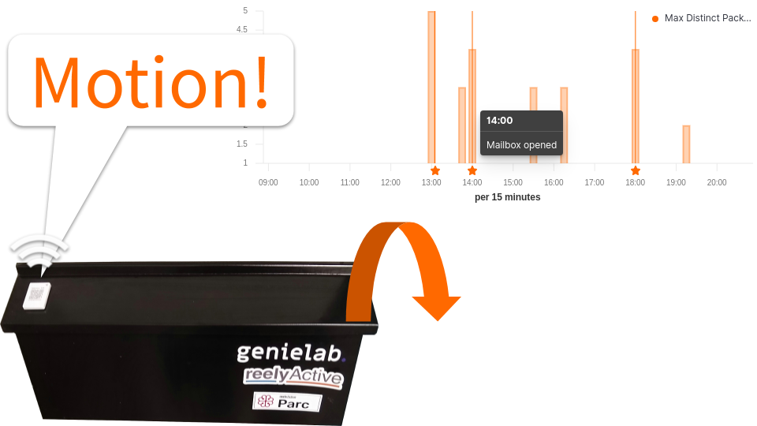
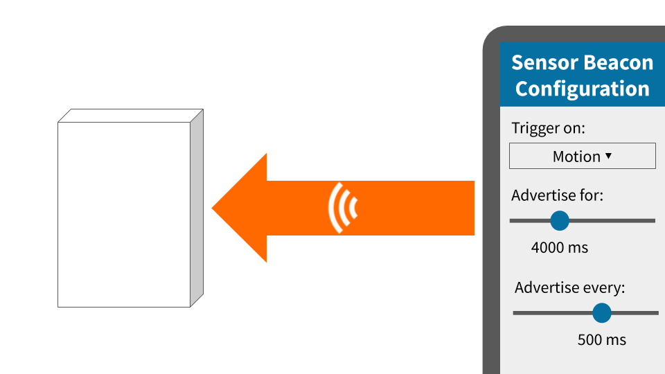
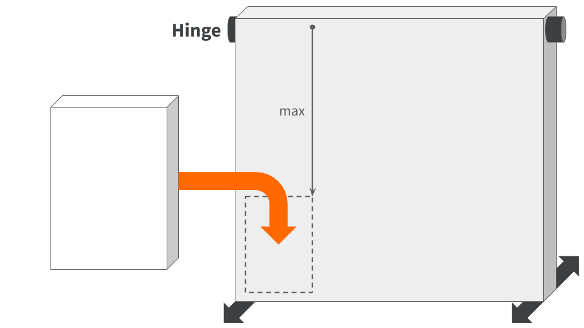
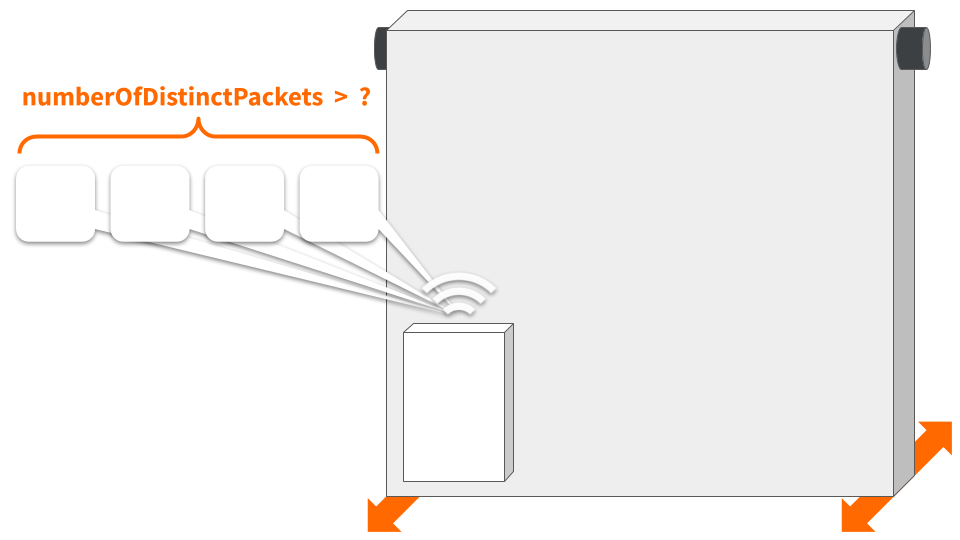
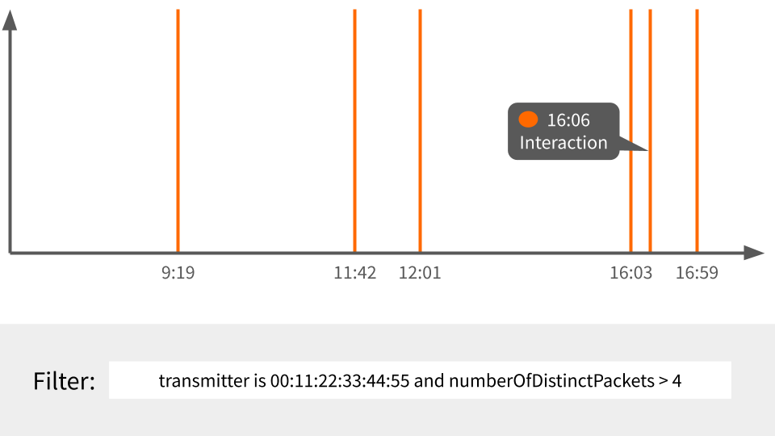

Detect Interaction with a Hinged Object
Detect the opening of a door or lid, or manipulation of a handle or tab.
The TL;DR (Too Long; Didn't Read)
Learn a simple yet effective means to observe and analyse interaction with any hinged object.
- Hinged object?
- Doors, lids, handles, tabs — anything that pivots on a hinge with significant motion.
- Why detect this?
- Occupancy analytics in the case of a door. Operational efficiencies in the case of a trash lid. Compliance in the case of a hand wash station. The list goes on...
- Does this really work?
- We've certainly been using it successfully at reelyActive Parc!
How this works
The beacon transmits accelerometer data on motion, which is interpreted as an interaction




Configure the sensor beacon Step 1 of 4
Configure a beacon to advertise when motion is detected by its accelerometer.
- Can any beacon be used?
- No. Only beacons with an accelerometer will be able to detect when they are in motion.
- What beacons have accelerometers?
- Such beacons include the Minew E8 and the second-generation Puck.js among others.
Install the sensor beacon Step 2 of 4
Affix the beacon to the hinged object so as to maximise its motion during an interaction.
- Is placement important?
- Yes. If there's insufficient motion to trigger the beacon, the interaction will not be detected.
- What placement is optimal?
- In general, placement farthest from the hinge will produce the most motion.
Calibrate the interaction detection Step 3 of 4
Determine the threshold of unique sensor readings that correspond with an interaction.
- Why unique sensor readings?
- When motion is detected, the beacon will periodically transmit real-time accelerometer data, with each data reading likely to be unique during an interaction.
- Why not a standard threshold?
- A default threshold may indeed produce reliable results in some scenarios, but this is best validated and adjusted on a case-by-case basis.
Create the visualisation in Kibana Step 4 of 4
Create a time series visualisation annotated with each detected interaction.
- Why a time series?
- A time series visualisation highlights interaction patterns over the course of a day, week, month or any pertinent timeframe.
- Are there alternatives?
- Of course! Kibana provides plenty of visualisation options, and Elasticsearch affords a rich set of queries. What we present here is a starting point.
Where to next?
Continue exploring our open architecture and all its applications.
-

reelyActive Kibana integration overview
Find links to all our Kibana tutorials. -

Install our open source software suite on a Pi
Our step-by-step guide to make a Raspberry Pi into an open RTLS, RFID and M2M platform. -

diyActive Home
The home for reelyActive developers.